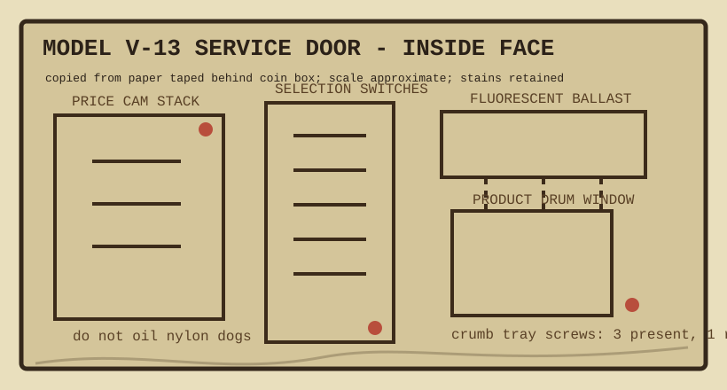

The manufacturer page was missing. This replacement was drawn from the metal labels still readable inside the door, plus grease-pencil arrows found on the ballast cover.

Door opening order: pull bottom edge until hinge clicks, lift one finger-width, then turn the key. If you turn before lifting, the cabinet answers with a flat little knock.
Price cam stack: brass cams are numbered from the wall side, not the person side. Someone reversed this in blue ink and caused a winter of fifteen-cent coffee crackers.
Switch block: row B has a replacement toggle with a shorter throw. It works, but the sound is wrong enough that route drivers mention it.
Crumb tray: three screws are present. The fourth appears in every parts list and no photograph. Treat it as a clerical spirit, not a missing fastener.